작업 화면 · 새 페이지 · 제목과 소개 · 안내 상자
새 학습노트 열기
왼쪽 위 사이드바 열기를 누르고 새 페이지 아이콘 → 페이지를 고르세요. 제목 칸에 아래 이름을 넣고 Enter를 누르세요.
내 학습 노트


확인제목과 사이드바에 내 학습 노트가 보입니다.
다음 단계 →홈의 소개 적기
사이드바 닫기로 목록을 닫고, 제목 아래 빈 줄에 소개를 넣으세요. 글 왼쪽에 마우스를 올리면 점 여섯 개 손잡이가 나옵니다. 이 손잡이가 붙은 한 덩어리를 블록이라고 합니다.
관심 있는 주제를 모으고, 배운 내용을 나만의 방식으로 쌓아 갑니다.

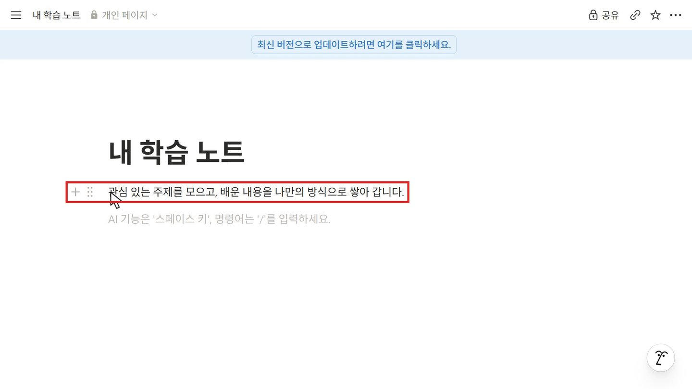
확인제목 아래에 소개가 있고, 글 왼쪽에 블록 손잡이가 보입니다.
다음 단계 →안내 상자 만들기
소개 아래 빈 줄에 /콜아웃을 입력하고 콜아웃을 고르세요. 상자 안에서 Ctrl+B를 누르고 첫 줄을 넣으세요. Ctrl+B를 다시 눌러 끄고, Shift+Enter로 줄을 바꿔 설명을 넣으세요.
하나의 주제에서, 나만의 지식으로
카드 하나에 주제 하나. 카드 안에는 글과 자료를 자유롭게 담고, 내용이 늘어나면 하위 페이지로 나누세요.

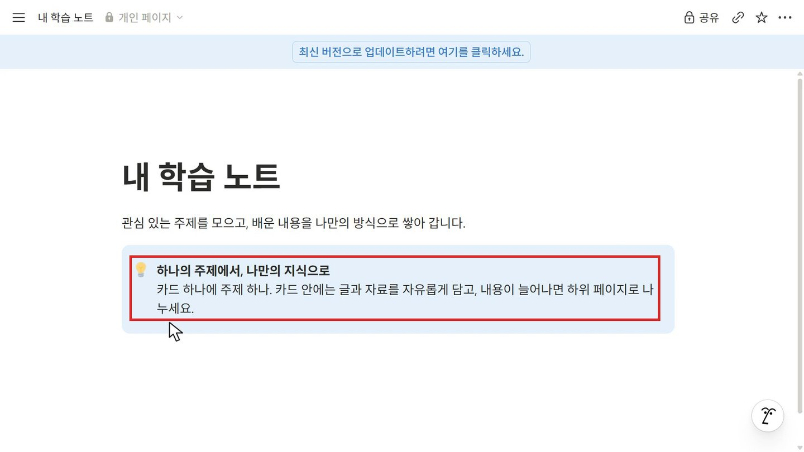
확인굵은 첫 줄과 설명이 한 상자 안에 있습니다.
다음 단계 →상자 색과 다음 줄
상자 왼쪽 손잡이를 눌러 색 → 파란색 배경을 고르세요. 마지막 문장 끝에서 Enter를 두 번 누르면 상자 밖으로 나옵니다.

확인상자가 파란색이고, 커서가 상자 밖에 있습니다.
다음 단계 →주제 갤러리 만들기와 첫 주제 열기
주제 갤러리 만들기
상자 아래 줄에 /갤러리를 입력하고 갤러리 보기를 고르세요. 오른쪽 창에서 비어 있는 새 데이터 소스를 누르세요. 새 데이터베이스 제목을 눌러 주제 모음으로 바꾸고 Enter를 누르세요.
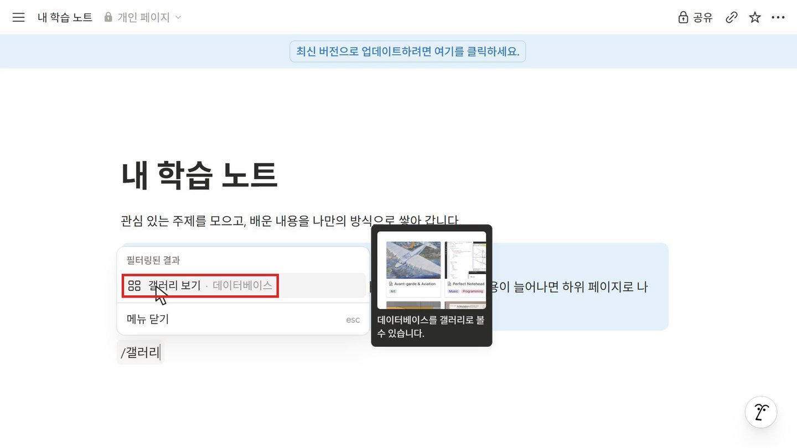


확인주제 모음 갤러리와 새로 만들기 버튼이 보입니다.
다음 단계 →갤러리 보기 이름 바꾸기
목록 오른쪽 조절점 모양 설정을 누르세요. 보기 이름을 주제 카드로 바꾸고 Enter를 누른 뒤 설정 창을 닫으세요. 주제 모음은 목록 이름, 주제 카드는 그 목록을 보는 방식의 이름입니다.
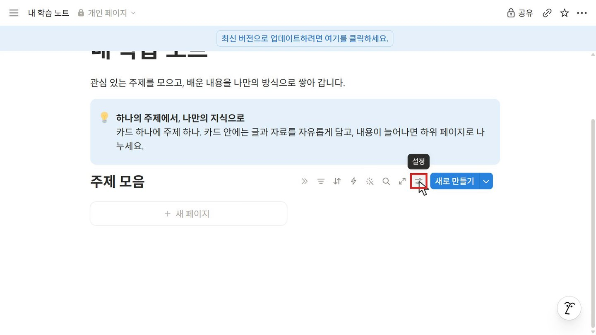

확인목록 이름은 주제 모음, 보기 이름은 주제 카드입니다.
다음 단계 →첫 주제 열기
목록 오른쪽 새로 만들기를 누르고, 열린 페이지 왼쪽 위 전체 페이지로 열기를 누르세요. 제목을 넣고 Enter를 누른 뒤 소개를 넣으세요.
Notion 익히기
글을 쓰고, 페이지를 연결하며 나에게 맞는 노트를 만들어 봅니다.


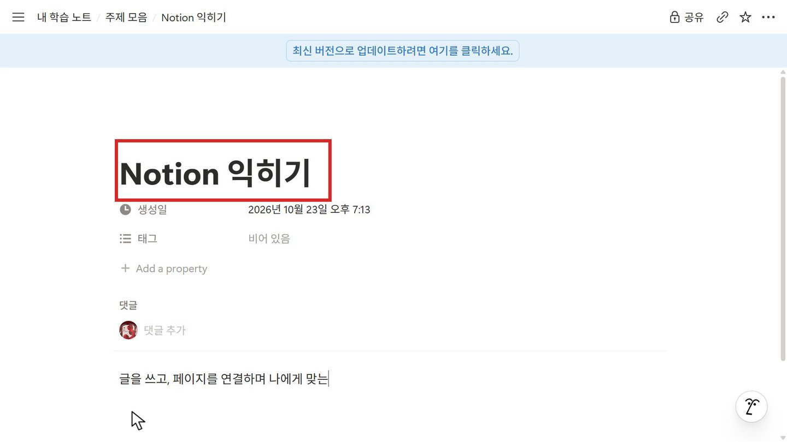
확인Notion 익히기 페이지에 소개가 있습니다.
다음 단계 →주제의 안내 상자
소개 아래 줄에 /콜아웃으로 상자를 만드세요. 첫 줄은 Ctrl+B로 굵게, 설명은 Ctrl+B를 끄고 Shift+Enter 뒤에 넣으세요.
짧게 적고, 필요한 만큼 연결하기
한 페이지에서 시작해 내용이 쌓이면 하위 페이지로 이어 갑니다.
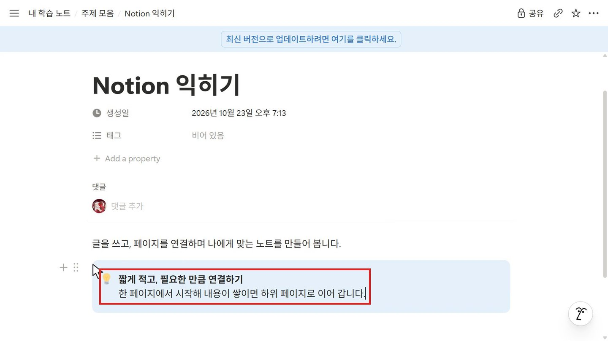
확인소개 아래에 안내 상자가 따로 있습니다.
다음 단계 →주제 소개와 하위 페이지
하위 페이지 자리 만들기
상자 손잡이에서 색 → 파란색 배경을 고르세요. 상자 마지막 줄에서 Enter를 두 번 눌러 나온 뒤 /제목 → 제목 2를 고르고 나의 페이지를 적으세요. Enter로 아래 줄로 내려가세요.

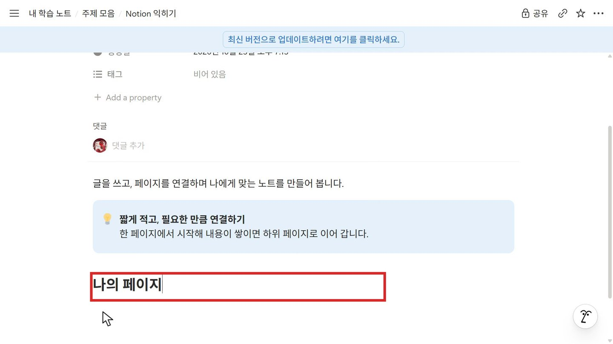
확인안내 상자 아래에 나의 페이지 제목이 있습니다.
다음 단계 →첫 하위 페이지 만들기
나의 페이지 아래 줄에 /페이지를 입력해 페이지를 고르세요. 제목에 첫 페이지 꾸미기를 넣고 Enter를 누른 뒤 소개를 넣으세요. 위쪽 경로의 Notion 익히기가 부모 주제입니다.
첫 페이지 꾸미기
한 페이지 안에서도 글의 모양을 바꾸어 읽기 쉽게 정리할 수 있습니다.

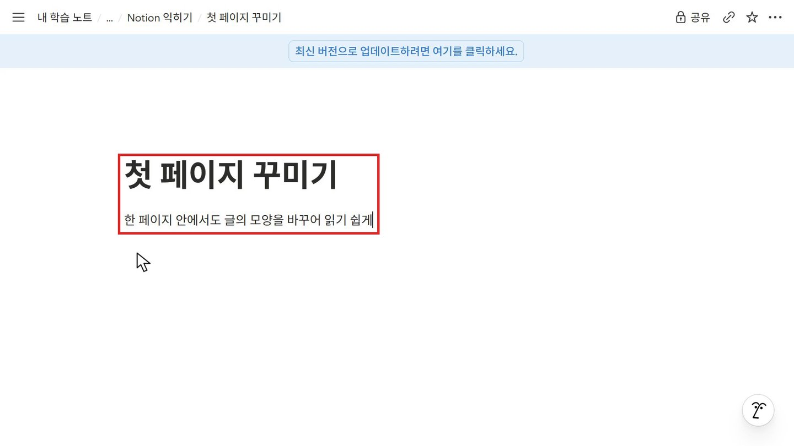
확인Notion 익히기 안에 첫 페이지 꾸미기가 들어 있습니다.
다음 단계 →제목과 글머리 목록
소개 아래 줄에서 /제목 → 제목 2를 골라 오늘 써 본 방법을 적으세요. 다음 줄에서 /글머리 → 글머리 기호 목록을 고르고 세 문장을 한 항목씩 넣으세요(항목 사이는 Enter). 마지막 빈 항목에서 Enter를 한 번 더 누르면 목록이 끝납니다.
제목으로 내용의 구획 나누기
같은 성격의 내용은 목록으로 정리하기
긴 설명은 토글 안에 접어 두기
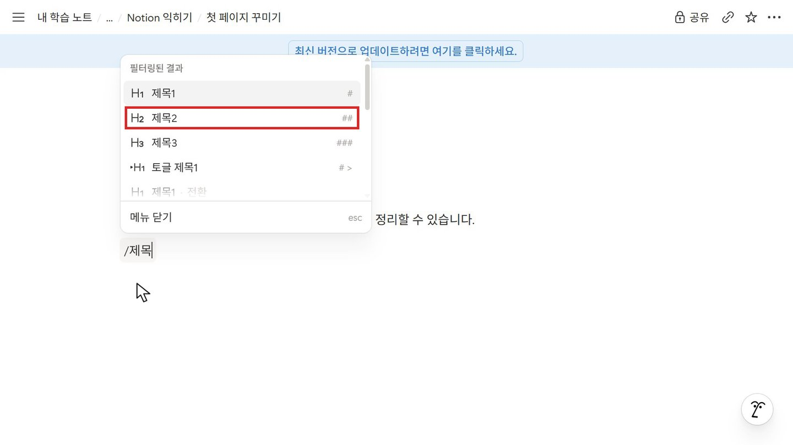

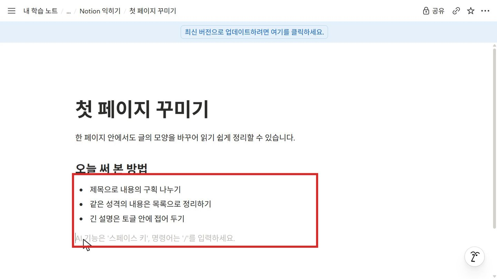
확인세 방법이 글머리 목록이고, 그 아래는 일반 줄입니다.
다음 단계 →긴 설명 토글 · 다음에 할 일 · 목차
긴 설명을 토글로 접기
일반 줄에 /토글을 입력해 토글 목록을 고르세요. 질문을 제목으로 넣고, 왼쪽 삼각형을 눌러 펼친 뒤 안쪽에 설명을 넣으세요.
제목과 굵은 글씨는 어떻게 다를까?
제목은 문서의 구획을 만들고 목차에도 표시됩니다. 굵은 글씨는 문장 안에서 중요한 말을 강조할 때 씁니다.


확인토글 제목 아래 안쪽에 설명이 있습니다.
다음 단계 →접기와 펼치기 확인
삼각형을 눌러 접었다가 다시 펼치세요. 접은 제목 끝에서 Enter를 누르고, 새로 생긴 빈 토글에서 Backspace를 누르면 일반 줄이 됩니다.

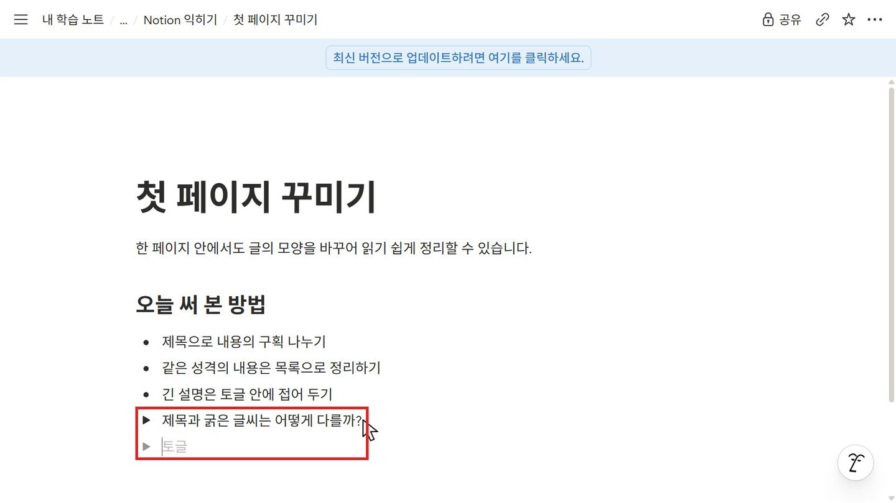
확인접으면 질문만, 펼치면 설명까지 보입니다.
다음 단계 →다음에 할 일 표시
일반 줄에 /구분선을 입력해 구분선을 넣으세요. 그 아래 제목 2로 다음에 해 볼 것을 적고, 다음 줄에서 /할 → 할 일 목록을 고르세요. 두 항목을 넣고 마지막 빈 항목에서 Enter를 한 번 더 누르세요. 체크 상자는 아직 비워 두세요.
내 관심 주제로 카드 하나 더 만들기
내용에 어울리는 하위 페이지 이름 붙이기

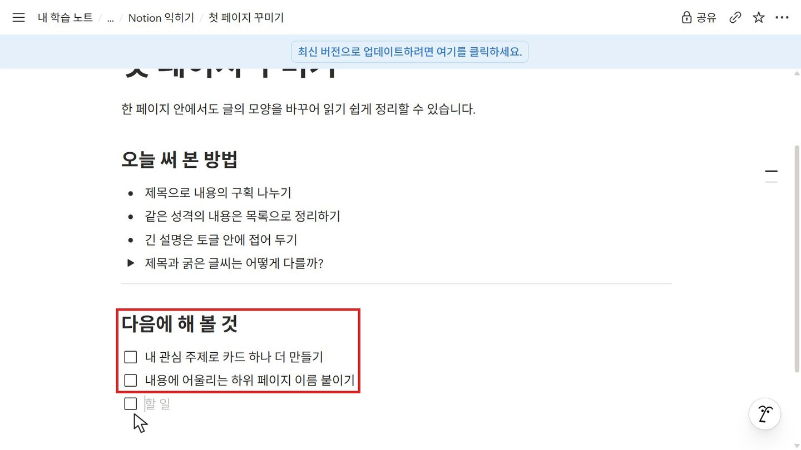
확인두 할 일이 빈 체크 상자와 함께 보입니다.
다음 단계 →목차로 필요한 곳 찾기
페이지 위로 올라가 소개 문장 끝에서 Enter를 누르고 /목차 → 목차를 고르세요. 목차의 다음에 해 볼 것을 누르면 그 제목으로 이동합니다.


확인목차에 두 제목이 있고, 누르면 그 자리로 이동합니다.
다음 단계 →번호 목록과 도움말 링크
두 번째 하위 페이지
위쪽 경로 Notion 익히기를 누르세요. 나의 페이지 제목 끝에서 Enter를 누르고 /페이지를 고른 뒤 제목과 소개를 넣으세요.
페이지 연결하기
내용이 길어지면 같은 주제 안에서 페이지를 나눠 봅니다.


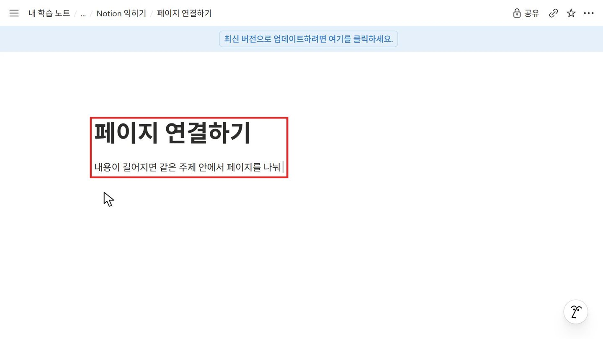
확인같은 부모 주제 안에 두 번째 하위 페이지가 생깁니다.
다음 단계 →순서를 번호 목록으로 남기기
소개 아래에 제목 2로 하위 페이지 만들기를 적으세요. 다음 줄에서 /번호 → 번호 매기기 목록을 고르고 네 항목을 한 줄씩 넣으세요. 마지막 빈 항목에서 Enter를 한 번 더 누르세요.
주제 카드를 엽니다.
빈 줄에서 슬래시를 입력하고 페이지를 고릅니다.
페이지 이름을 붙이고 내용을 적습니다.
위쪽 경로를 눌러 부모 주제로 돌아옵니다.

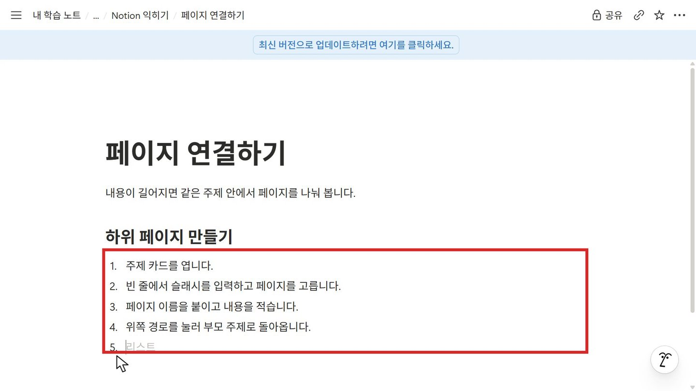
확인네 단계에 순서대로 번호가 붙습니다.
다음 단계 →안내와 참고 구역
일반 줄에서 /콜아웃으로 안내를 넣으세요. 마지막 줄에서 Enter를 두 번 눌러 나온 뒤 제목 2로 필요할 때 찾아보기를 적고, 다음 줄에 Notion 글쓰기 도움말을 입력하세요.
페이지 이름은 내용에 맞게 자유롭게 붙이세요.

확인번호 목록 아래에 안내 상자와 참고 구역이 있습니다.
다음 단계 →도움말 출처 연결하기
도움말 문장 끝에서 Shift+Home으로 글을 고르고 Ctrl+K를 누르세요. 아래 주소를 붙여넣고 Enter를 누르세요. 오른쪽 방향키로 선택을 풀고 Enter로 내려가 다시 볼 이유를 넣으세요.
https://www.notion.com/help/writing-and-editing-basics
글과 블록을 다루는 방법이 필요할 때 공식 도움말에서 다시 확인합니다.


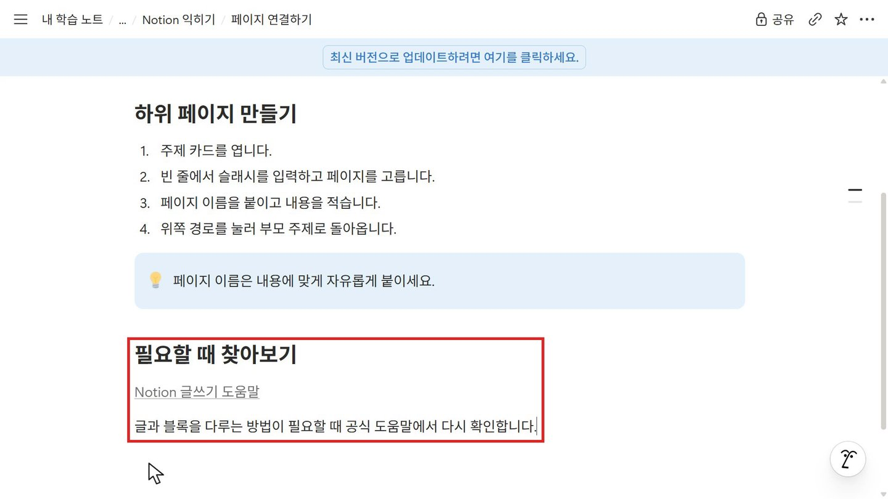
확인도움말 글자에 링크가 걸리고, 바로 아래에 다시 볼 이유가 있습니다.
다음 단계 →두 하위 페이지를 안내 상자로 묶기
왼쪽 안내 상자 만들기
위쪽 경로 Notion 익히기를 누르세요. 나의 페이지 제목 끝에서 Enter를 눌러 두 페이지 링크 위에 빈 줄을 만들고 /콜아웃을 고르세요. 첫 줄은 Ctrl+B로 굵게, 설명은 굵기를 끄고 Shift+Enter 뒤에 넣으세요. 손잡이에서 색 → 회색 배경을 고르세요.
01 · 글 정리하기
제목·목록·토글로 읽기 편하게 정리합니다.

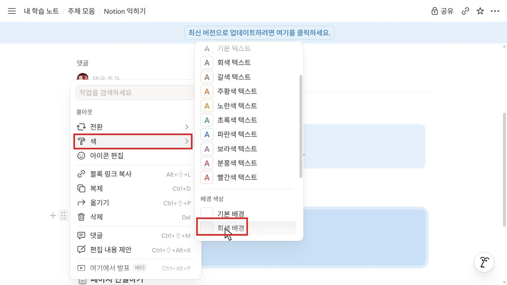
확인두 링크 위에 회색 상자가 있습니다.
다음 단계 →오른쪽 안내 상자 만들기
첫 상자 마지막 줄에서 Enter를 두 번 눌러 나오세요. /콜아웃으로 두 번째 상자를 만들어 같은 방법으로 두 줄을 넣고 회색 배경으로 바꾸세요.
02 · 내용 연결하기
하위 페이지와 링크로 내용을 이어 갑니다.

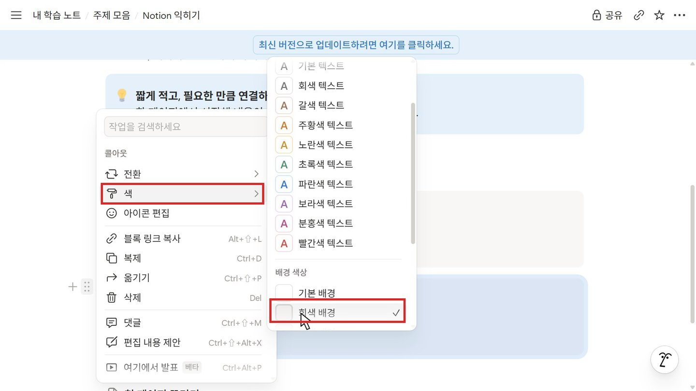
확인회색 상자 두 개가 따로 있습니다.
다음 단계 →두 상자를 나란히 놓기
두 상자를 나란히 배치
두 번째 상자의 손잡이를 잡고 첫 상자 오른쪽으로 끄세요. 세로선이 보일 때 놓으세요. 가로선에서 놓으면 위아래로 놓입니다.


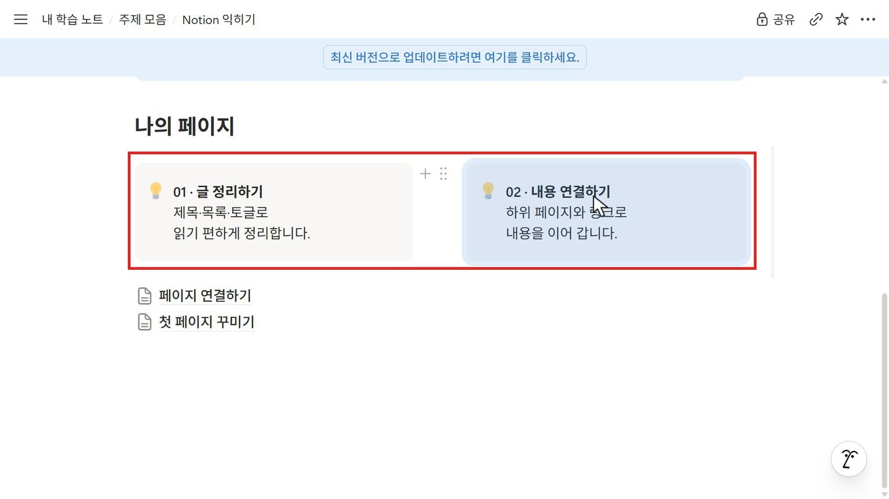
확인두 회색 상자가 좌우로 나란히 있습니다.
다음 단계 →하위 페이지를 상자 안에 넣기
아래 첫 페이지 꾸미기의 손잡이를 잡아 왼쪽 상자 설명 아래로, 페이지 연결하기는 오른쪽 상자 안으로 옮기세요. 이름을 누르면 페이지가 열리므로 손잡이를 잡습니다. 다 옮겼으면 위쪽 경로 내 학습 노트를 누르세요.


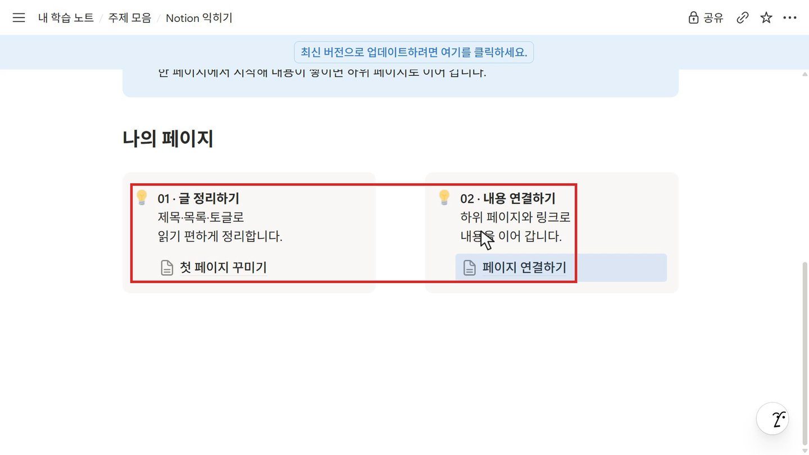
확인두 상자 안에 페이지 링크가 하나씩 있습니다.
다음 단계 →다른 주제에 메모와 자료 담기
지식 자산화 주제 만들기
홈의 주제 모음에서 새로 만들기 → 전체 페이지로 열기를 누르세요. 제목과 소개를 넣으세요.
지식 자산화
배운 것을 한 번 읽고 끝내지 않고, 필요할 때 다시 꺼내 쓰는 방법을 생각합니다.

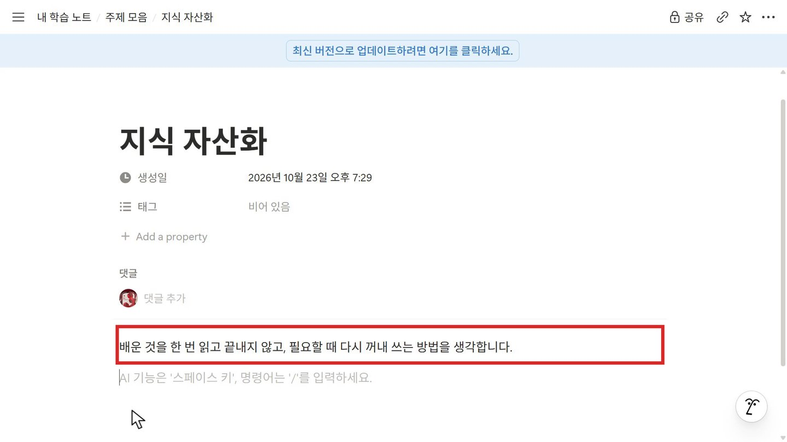
확인두 번째 주제에 제목과 소개가 있습니다.
다음 단계 →지식 자산화 안내
소개 아래에 콜아웃을 넣으세요. 첫 줄은 굵게, 설명은 굵기를 끄고 Shift+Enter 뒤에 넣으세요. 손잡이에서 색 → 파란색 배경을 고르세요.
모아 두는 데서, 다시 꺼내 쓰는 데까지
내 말로 정리하면 무엇을 알고 무엇이 아직 모호한지 드러난다. 출처도 함께 남겨 두면 나중에 다시 확인하기 좋다.

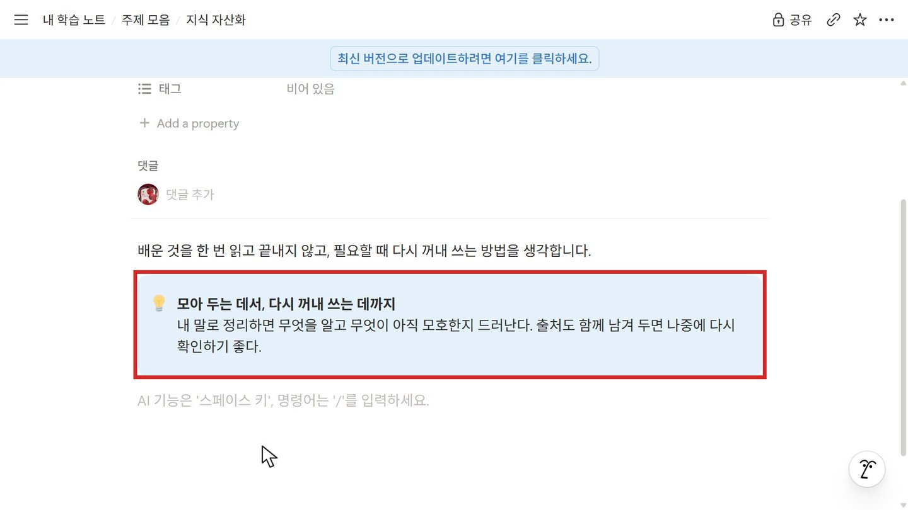
확인파란 상자 안에 내 말로 정리하고 출처를 남기는 이유가 있습니다.
다음 단계 →메모와 질문 남기기
상자에서 Enter를 두 번 눌러 나오세요. 제목 2로 내 말로 남기는 짧은 메모를 적고, 글머리 목록에 세 문장을 넣으세요. 목록 밖에 토글 목록을 만들어 질문을 넣고, 펼쳐 답을 넣은 뒤 접으세요.
기록의 목적은 다시 찾고 활용하는 것이다.
원문과 내가 이해한 내용을 구분해 남긴다.
나중에 다시 보고 싶은 질문도 함께 남긴다.
어떻게 다시 찾아볼까?
주제 이름을 분명하게 정하고 필요한 출처를 함께 남긴다.
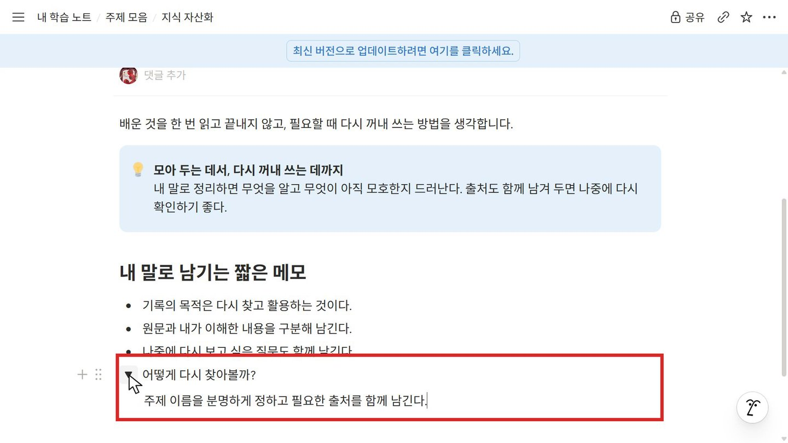
확인메모 세 항목과 다시 찾아볼 질문이 있습니다.
다음 단계 →표 보기 「전체 주제」 추가
같은 주제를 표로 보기
위쪽 경로 내 학습 노트를 누르세요. 목록 위 보기 이름에 마우스를 올리면 나오는 +를 누르고 표를 고르세요. 이름에 전체 주제를 넣고 완료를 누른 뒤 설정 창을 닫으세요.
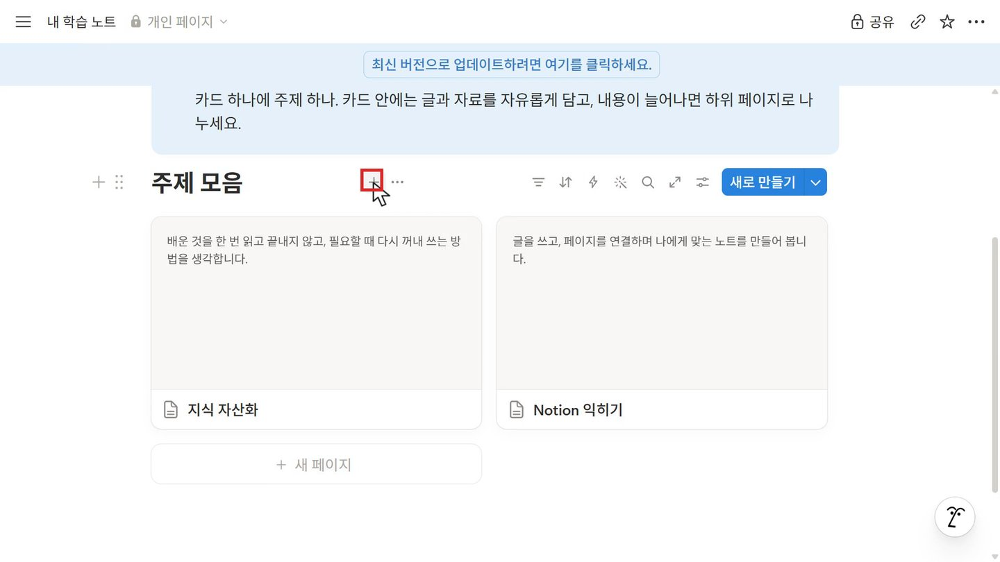

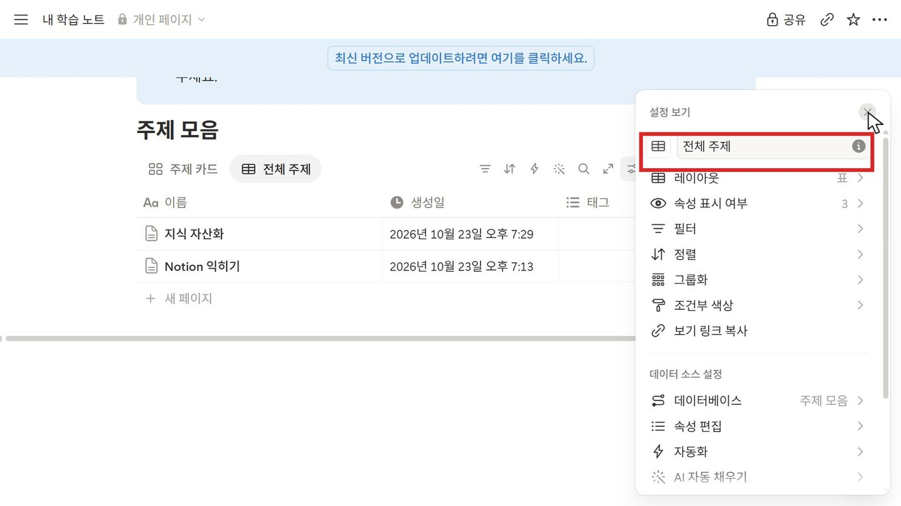
확인주제 카드와 전체 주제 두 보기에 같은 주제 이름이 보입니다.
다음 단계 →속성 추가 위치
전체 주제 목록 오른쪽 조절점 모양 설정 → 속성 편집 → 새 속성을 여세요. 속성은 주제마다 붙이는 정보 칸입니다.


확인속성의 이름과 종류를 정하는 창이 열립니다.
다음 단계 →분야 · 이해도 속성 만들기
분야 속성 만들기
이름에 분야, 종류에 선택을 지정하세요. 옵션 추가에 세 항목을 하나씩 넣고 Enter를 누른 뒤 설정 창을 닫으세요.
도구
학습 방법
AI 실습
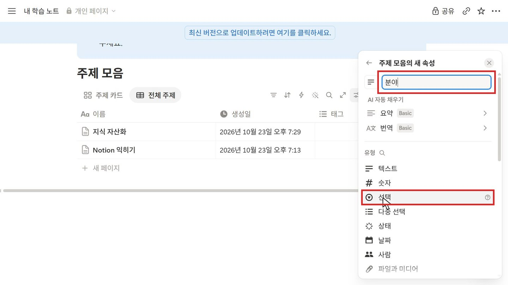


확인분야에서 도구·학습 방법·AI 실습을 고를 수 있습니다.
다음 단계 →이해도 속성 만들기
설정 → 속성 편집 → 새 속성에서 이름에 이해도, 종류에 선택을 지정하세요. 옵션 추가에 세 항목을 넣고 닫으세요.
설명 못함
대충 앎
설명 가능
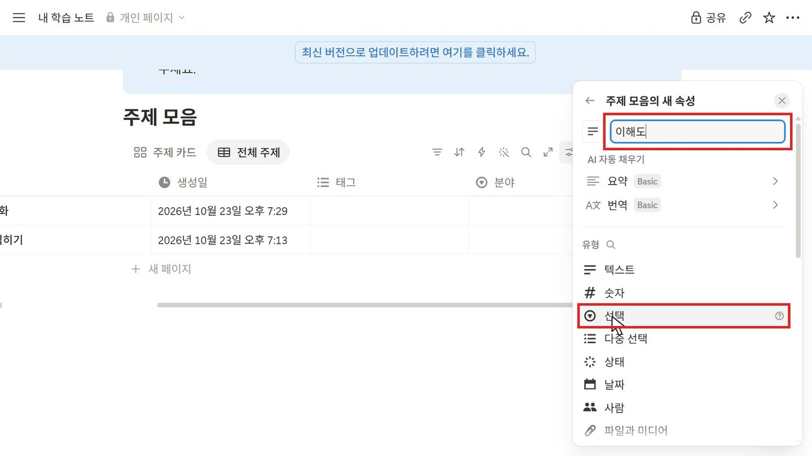
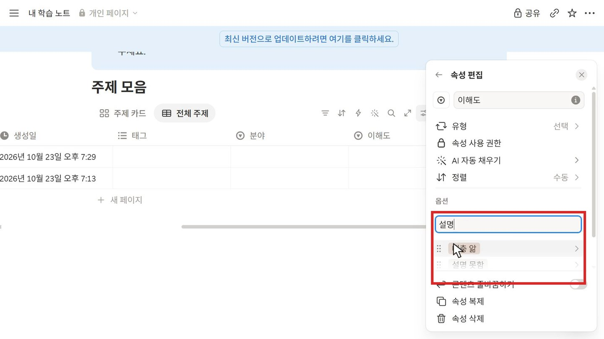
확인이해도에 세 단계가 있습니다.
다음 단계 →카드 그림과 크기 맞추기
카드 이미지 속성
설정 → 속성 편집 → 새 속성에서 이름에 카드 이미지, 종류에 파일과 미디어를 지정하고 설정 창을 닫으세요.
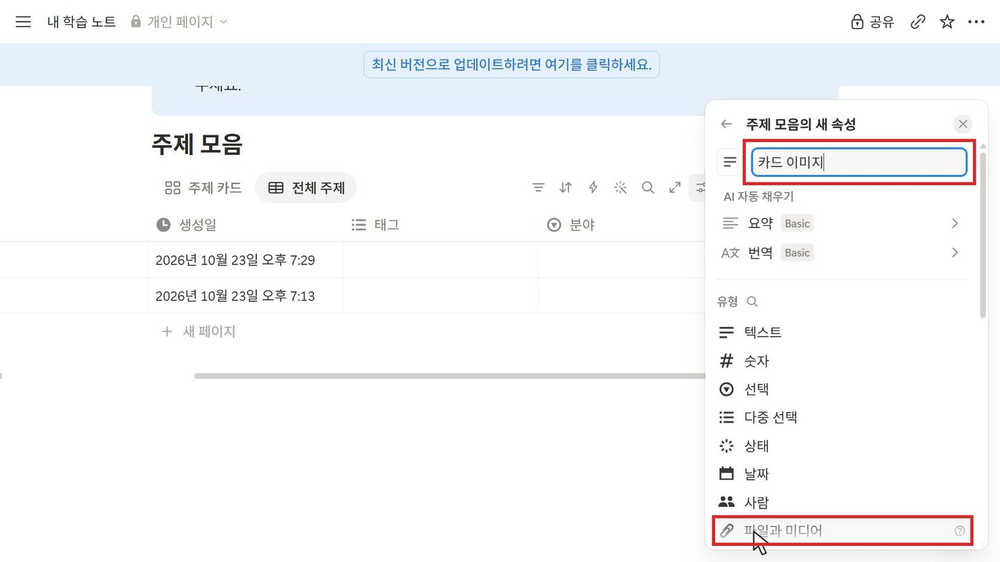
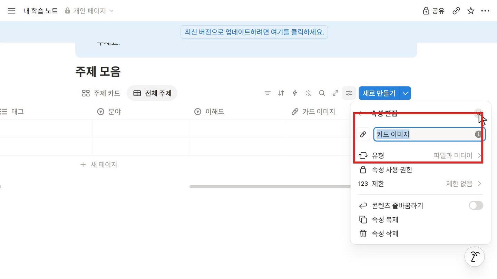
확인주제마다 그림을 넣을 카드 이미지 칸이 생깁니다.
다음 단계 →첫 주제의 분야와 이해도
주제 카드 보기에서 Notion 익히기를 열고 전체 페이지로 열기를 누르세요. 분야는 도구를, 이해도는 내 상태를 고르세요. 아직 설명할 수 없으면 설명 못함, 알아보지만 설명이 어려우면 대충 앎, 내 말로 설명할 수 있으면 설명 가능입니다.

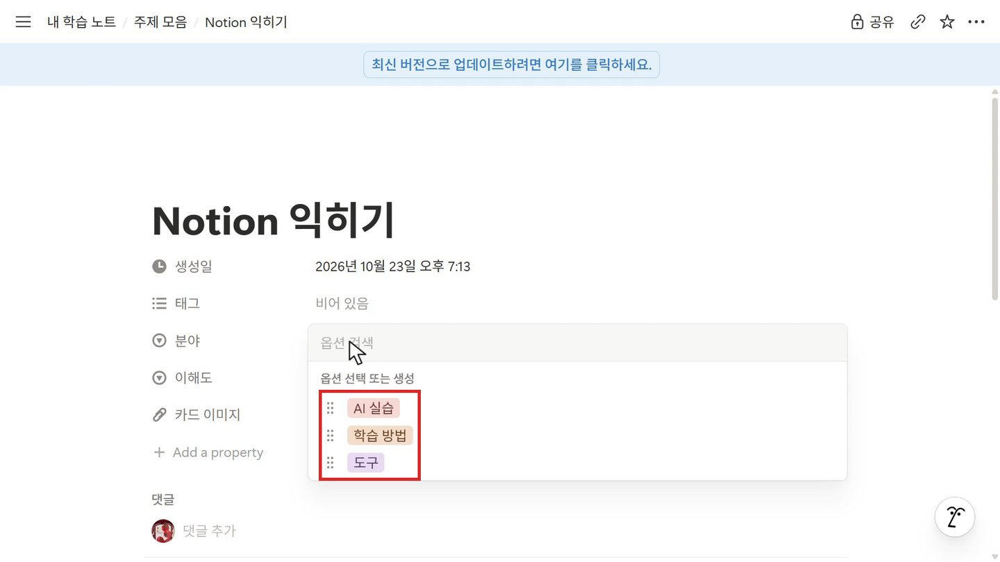
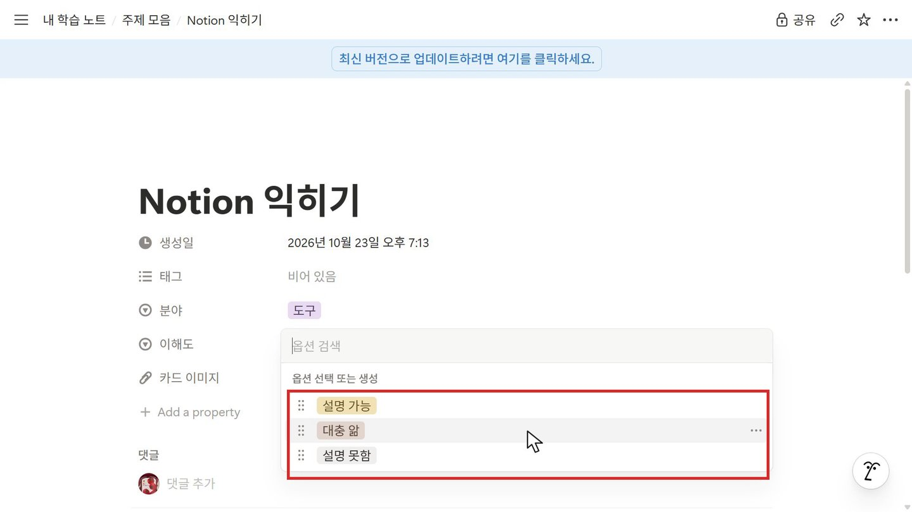
확인분야와 내가 고른 이해도가 보입니다.
다음 단계 →첫 카드에 그림 연결
위쪽 카드 이미지 빈칸을 누르고 링크 탭을 여세요. 아래 주소를 붙여넣고 파란 링크 버튼을 누른 뒤 Esc를 두 번 누르세요.
https://raw.githubusercontent.com/uengine-oss/hyd-iot-edu/9d5fa180/workspace/%EA%B0%95%EC%9D%98%EC%A0%9C%EC%9E%91/%EC%A0%9C%EC%9E%91%EB%8F%84%EA%B5%AC/%EC%B4%AC%EC%98%81/notion/design/notion.png

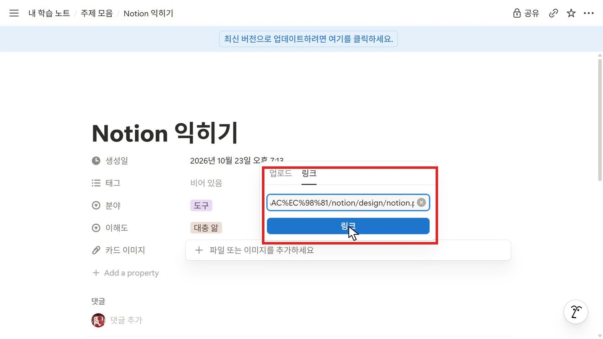
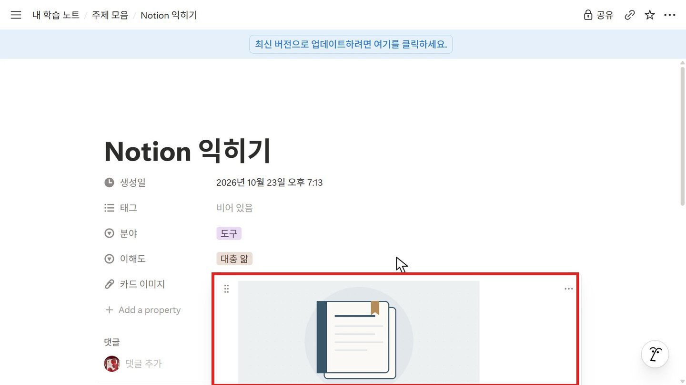
확인카드 이미지에 그림이 연결됩니다.
다음 단계 →두 번째 카드 속성
위쪽 내 학습 노트로 돌아와 지식 자산화 카드를 전체 페이지로 여세요. 분야는 학습 방법, 이해도는 내 상태를 고르세요. 카드 이미지 → 링크에 아래 주소를 붙여넣고 링크를 누른 뒤 Esc로 닫으세요.
https://raw.githubusercontent.com/uengine-oss/hyd-iot-edu/9d5fa180/workspace/%EA%B0%95%EC%9D%98%EC%A0%9C%EC%9E%91/%EC%A0%9C%EC%9E%91%EB%8F%84%EA%B5%AC/%EC%B4%AC%EC%98%81/notion/design/knowledge.png


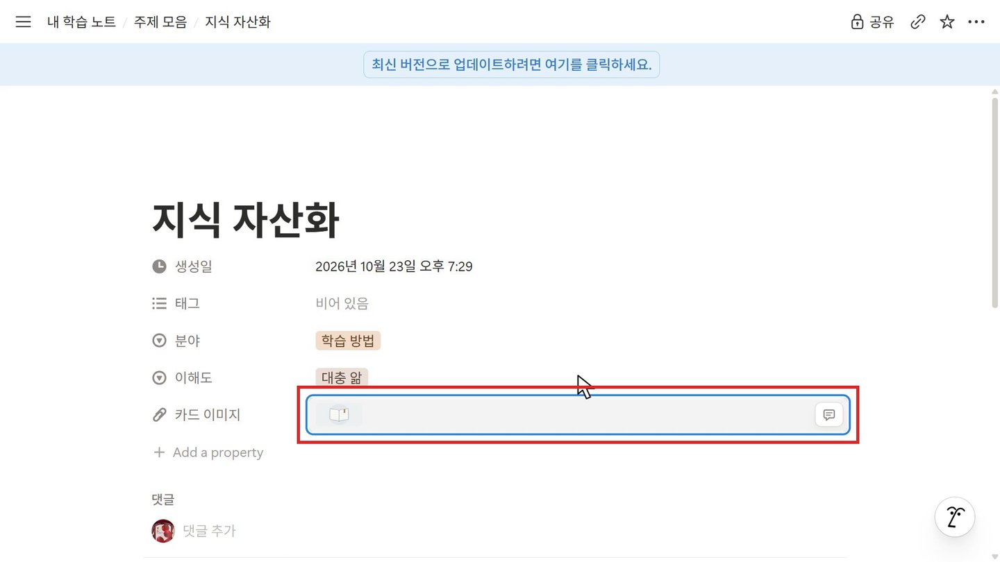
확인지식 자산화에도 분야·이해도·그림이 있습니다.
다음 단계 →갤러리에 그림 보이기
홈의 주제 카드 보기에서 설정 → 레이아웃 → 카드 미리보기 → 페이지 속성 → 카드 이미지를 고르세요. 카드 크기는 작게를 고르고 설정 창을 닫으세요.

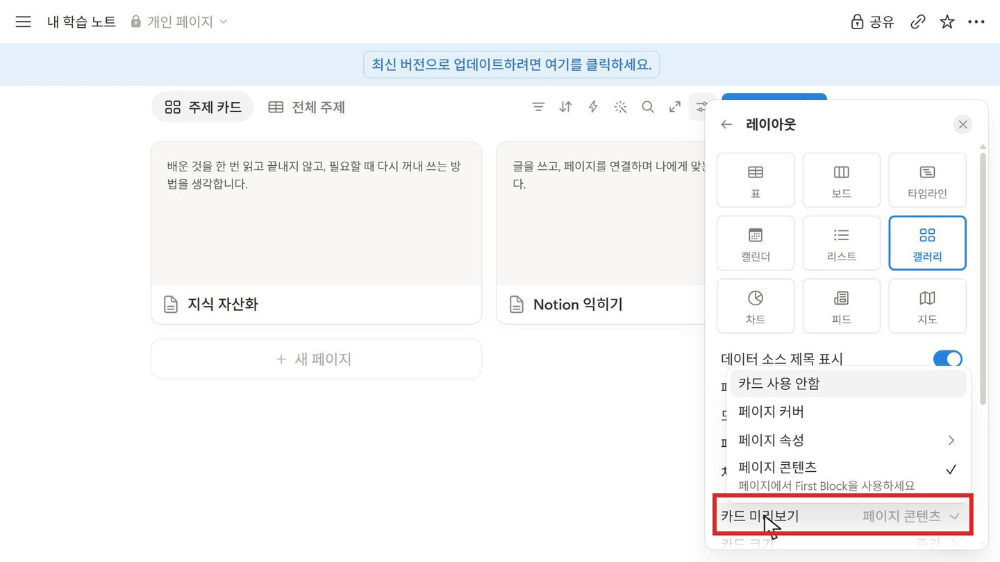
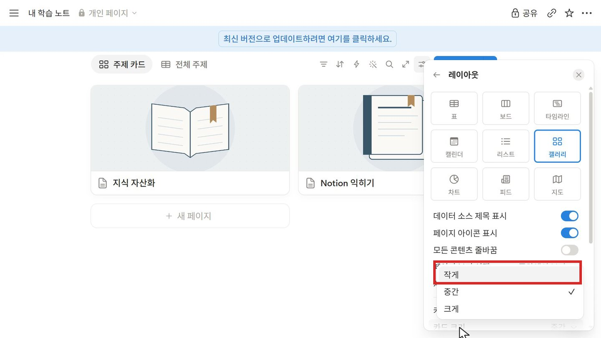
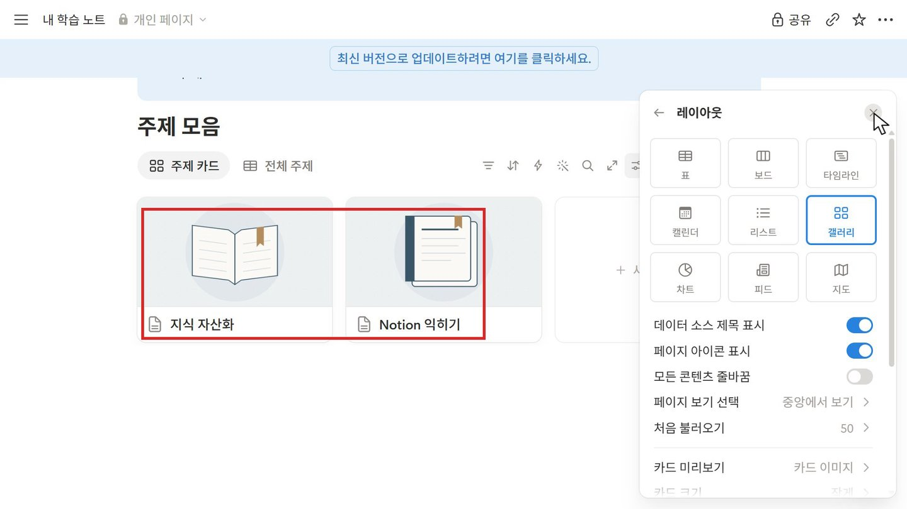
확인갤러리 카드에 그림과 주제 이름이 보입니다.
다음 단계 →표에 필요한 속성만 보이기
전체 주제 보기에서 설정 → 속성 표시 여부를 여세요. 생성일, 태그, 카드 이미지 옆 눈 아이콘을 눌러 숨기고 닫으세요.


확인표에는 이름·분야·이해도가 남고, 갤러리 그림은 그대로입니다.
다음 단계 →검색하고 전체 목록 복원
표 오른쪽 돋보기를 누르고 지식을 입력하세요. 검색어를 전체 선택해 Backspace로 지우고, Esc로 검색칸을 닫은 뒤 주제 카드 보기로 돌아가세요.


확인검색 중에는 지식 자산화만, 검색어를 지우면 전체 주제가 보입니다.
다음 단계 →다음 주제를 위한 템플릿
새 주제 템플릿 열기
파란 새로 만들기 옆 아래 화살표를 눌러 새 템플릿을 고르세요. 제목에 새 주제를 넣고 Enter를 누르세요. 템플릿은 다음 주제를 만들 때 가져다 쓰는 기본 모양입니다.

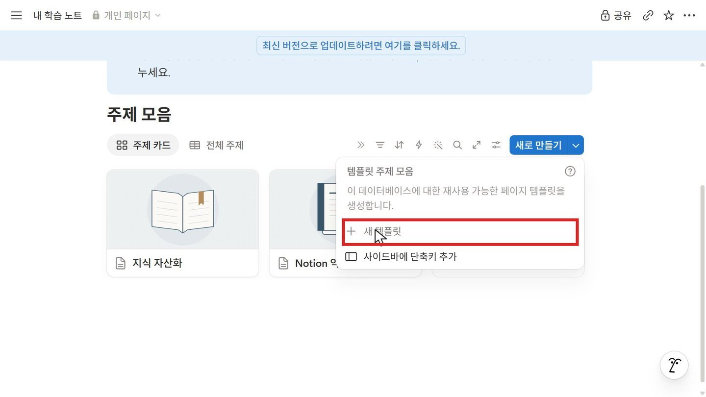

확인위쪽에 템플릿을 편집 중이라는 안내가 보입니다.
다음 단계 →템플릿 소개와 안내
첫 줄에 소개를 넣고 Enter를 누르세요. 아래에 콜아웃을 넣어 굵은 첫 줄과 설명을 Shift+Enter로 나누고 파란색 배경을 고르세요.
이 주제에서 알고 싶은 것, 기억하고 싶은 것을 한 줄로 적어 보세요.
나의 주제를, 나의 방식으로
짧은 글부터 시작하세요. 아래 항목은 필요한 만큼 바꾸고 모두 채울 필요는 없습니다.
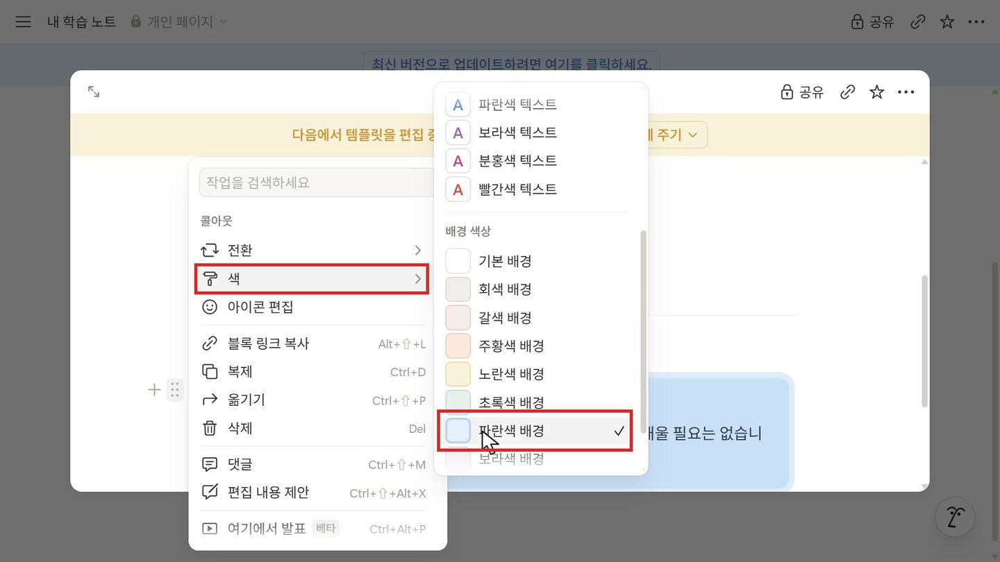
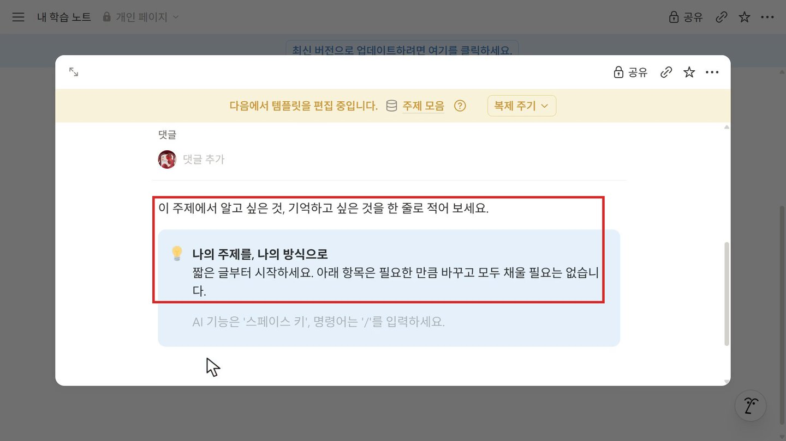
확인템플릿에 소개와 파란 안내 상자가 있습니다.
다음 단계 →템플릿 기록과 접힌 안내
상자 밖으로 나와 제목 2로 나의 기록을 적고, 글머리 목록 두 항목을 넣으세요. 일반 줄에 토글 목록을 만들어 제목과 설명을 넣고 접으세요. Esc로 선택과 템플릿 창을 닫으세요.
기억하고 싶은 내용
다시 보고 싶은 자료
나에게 맞게 바꾸려면
항목 이름과 배치는 자유롭게 바꾸세요. 내용이 길어지면 하위 페이지로 나누세요.
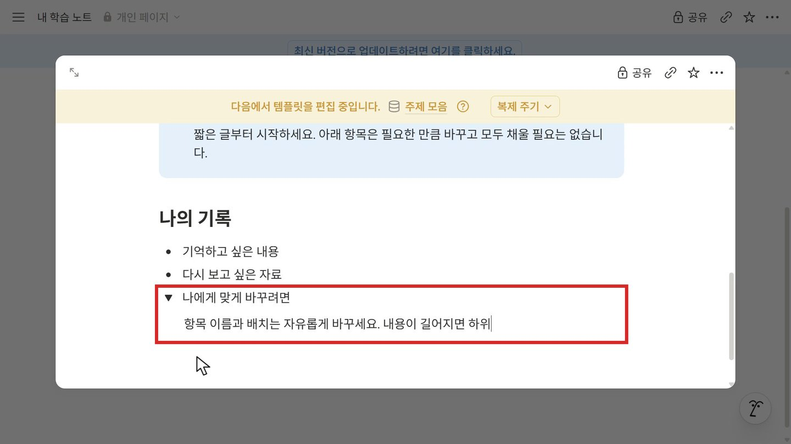
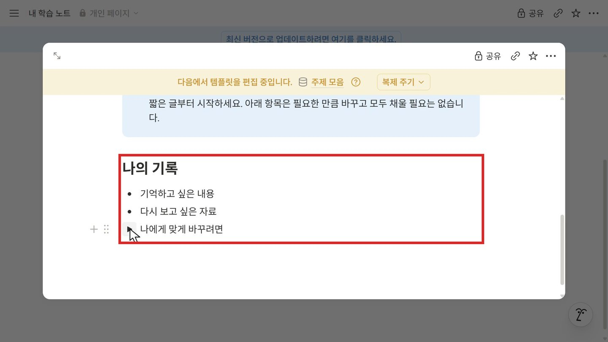
확인템플릿에 기록 항목과 접힌 안내가 있습니다.
다음 단계 →템플릿으로 새 주제 시작하기
템플릿을 새 주제에 적용
새로 만들기 옆 화살표에서 새 주제를 고르고 전체 페이지로 열기를 누르세요. 제목을 눌러 전체 선택해 아래 제목으로 바꾸고, 소개 문장도 끝까지 골라 아래 소개로 바꾸세요.
나만의 독서 기록
읽으면서 남기고 싶은 생각과 자료를 모읍니다.

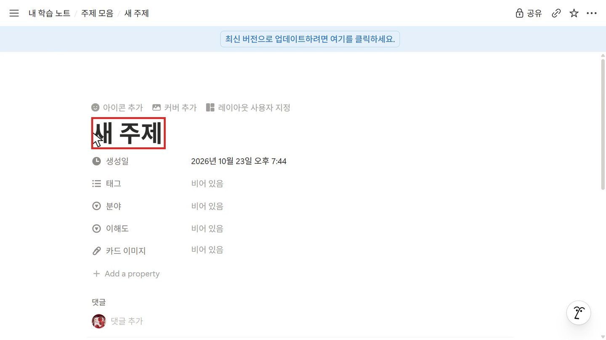
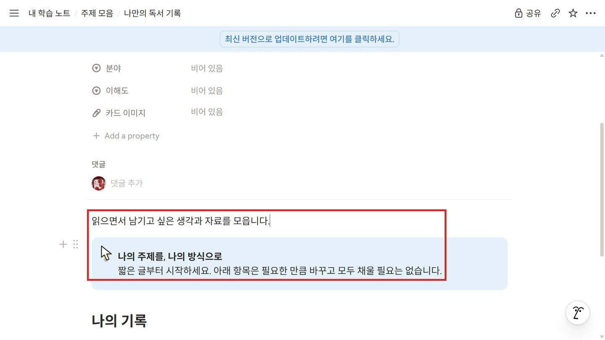
확인템플릿 구조는 그대로이고, 제목과 소개만 바뀝니다.
다음 단계 →새 주제에 하위 페이지 추가
나의 기록 제목 끝에서 Enter를 누르고 /페이지를 고르세요. 제목과 소개를 넣은 뒤 위쪽 내 학습 노트를 누르세요.
다음에 읽을 책
읽고 싶은 책과 그 이유를 짧게 남깁니다.

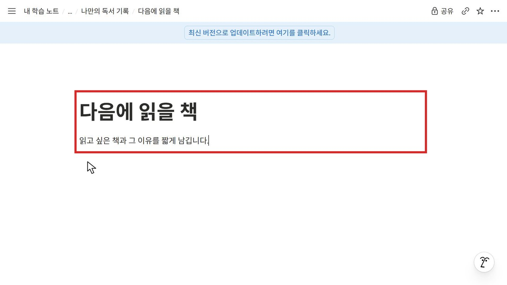
확인홈에 새 주제 카드가 보이고, 그 안에 하위 페이지가 있습니다.
다음 단계 →공유 · 게시 · 댓글 · 내보내기 설정
공유 권한 위치 확인
홈 오른쪽 위 공유를 여세요. 초대 칸, 일반 사용 권한, 링크 복사가 나옵니다. 아직 남에게 보일 내용이 아니니 초대는 보내지 말고 Esc로 닫으세요.


확인볼 사람을 정하는 권한과 링크 복사가 따로 보입니다.
다음 단계 →공유와 게시 구별
공유 → 게시 탭을 여세요. 웹 전체에 공개하는 게시 버튼이 나옵니다. 공유는 정한 사람에게만 엽니다. 지금은 공개할 내용이 아니니 누르지 말고 Esc로 닫으세요.

확인게시 버튼을 누르지 않고 닫았습니다.
다음 단계 →댓글 위치 확인
홈의 소개 문장을 드래그해 고르고 Ctrl+Shift+M을 누르세요. 그 문장에 연결된 댓글 입력창이 나옵니다. 남길 의견이 없으니 Esc로 닫으세요.

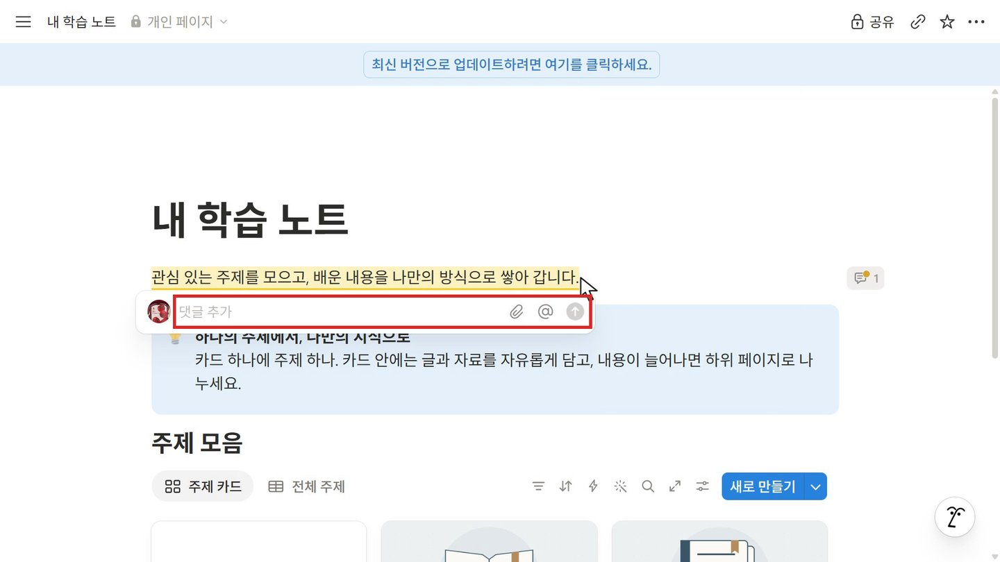
확인고른 문장에 연결된 댓글 입력창이 나옵니다.
다음 단계 →내보내기 형식 선택
홈 오른쪽 위 점 세 개 메뉴에서 더 보기 → 내보내기를 여세요. 내보내기 형식은 HTML(브라우저에서 읽는 형식), 데이터베이스 보기는 현재 보기, 페이지 콘텐츠는 모든 콘텐츠로 두세요.

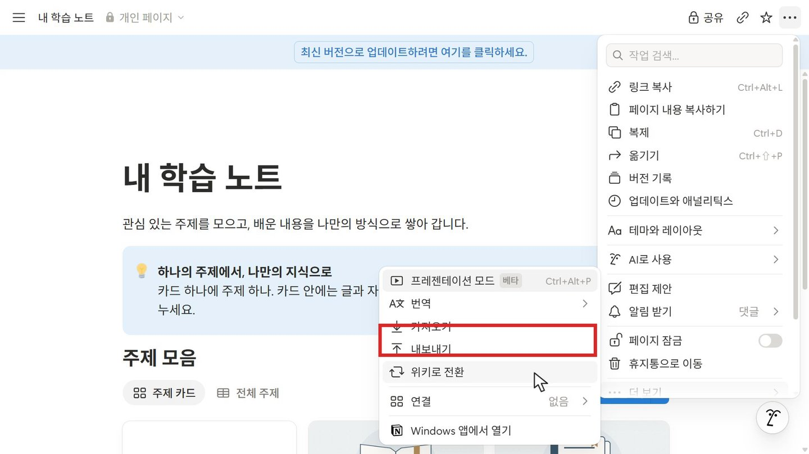
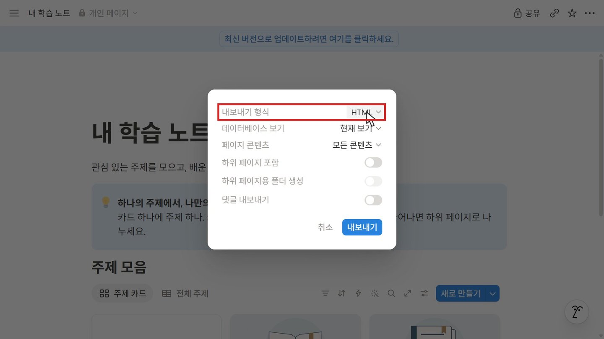
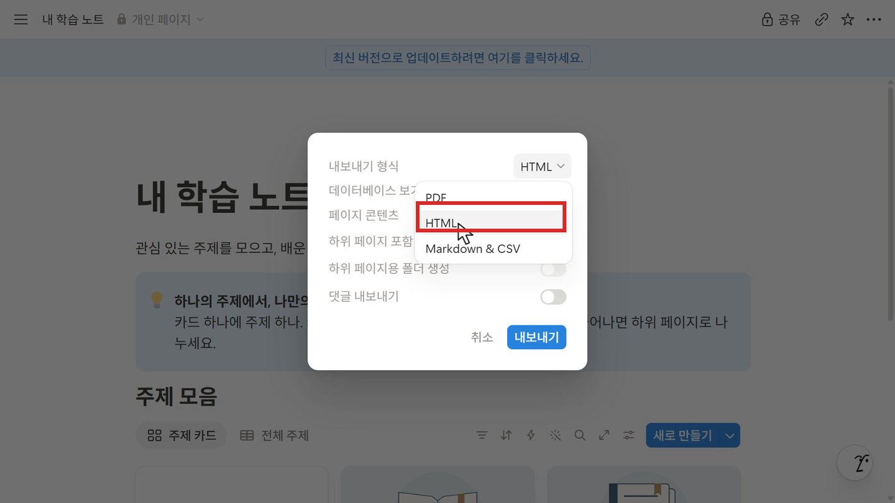
확인HTML 내보내기 설정 창이 열려 있습니다.
다음 단계 →내보내기 · 완성한 노트 둘러보기 · 마무리
하위 페이지와 함께 내보내기
하위 페이지 포함 스위치가 파란색인지 보고, 회색이면 눌러 켜세요. 내보내기를 누르세요.


확인내보내기 창이 닫히고 내 학습 노트 홈이 보입니다.
다음 단계 →저장한 페이지 다시 열기
홈에서 Notion 익히기를 열고 전체 페이지로 열기를 누르세요. 왼쪽 첫 페이지 꾸미기를 열면 제목·목록·토글·목차가 있습니다. 위쪽 경로로 돌아와 오른쪽 페이지 연결하기를 열면 번호 목록과 도움말 출처가 있습니다.


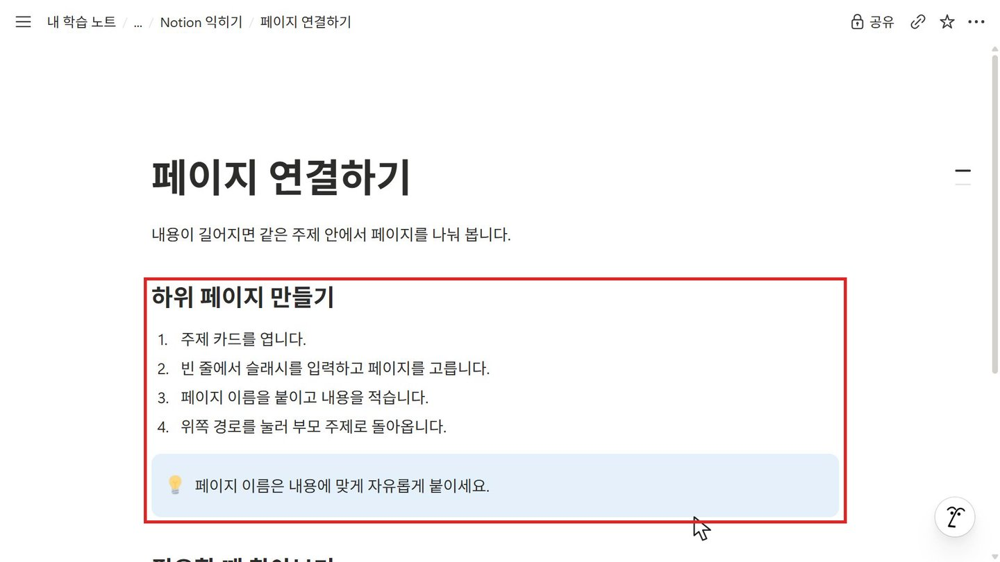
확인다시 연 두 하위 페이지에 쓴 내용과 출처가 남아 있습니다.
다음 단계 →오늘 한 것과 확인한 결과
위쪽 내 학습 노트를 누르세요. 주제 카드에 Notion 익히기, 지식 자산화, 템플릿으로 만든 내 주제가 있습니다.

확인홈에 세 주제 카드가 있고, 앞 단계에서 다시 연 두 하위 페이지에 내용과 출처가 남아 있습니다.